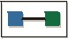
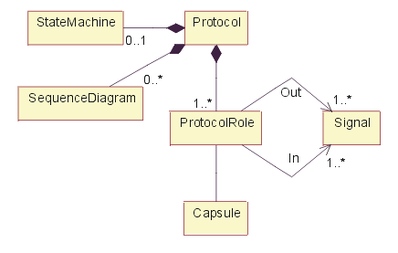

| Артефакт: Протокол |
|  |
|
| Артефакт-контейнер | ||
|---|---|---|
| Роли | Ответственный: | Изменен: |
| Задачи | Вход для: | Выход из: |
| Основное описание | Протоколы позволяют определить и многократно использовать спецификацию набора портов Рабочий продукт: Капсула. Протокол определяет набор типов входящих и исходящих сообщений (например, операции, сигналы operations) и (необязательно) кооперирование (обычно состоящее из набора диаграмм последовательностей, см. Рекомендации: Диаграмма последовательностей), которое определяет требуемый порядок сообщений, а также конечный автомат (описываемый набором диаграмм состояний, см. Рекомендации: Диаграмма состояний), задающий абстрактный алгоритм, который должны обеспечить участники протокола. Протокол является спецификацией желаемого алгоритма, который имеет место в коннекторе -- явной спецификацией договорного соглашения между участниками протокола. Это просто алгоритм, не задающий никаких структурных элементов. Протокол включает в себя набор участников, каждый из которых играет в протоколе определенную роль. Каждая роль протокола задается уникальным именем и набором сигналов, которые получает роль, а также набором сигналов, которые эта роль отправляет (любой из этих наборов может быть пустым). В качестве опции протокол также может иметь спецификацию допустимых последовательностей соединений; это может быть задано конечным автоматом. Наконец, протокол также может иметь набор прототипов последовательностей взаимодействия (их можно показать как диаграммы последовательностей). Этот набор должен соответствовать конечному автомату, если он определен. Бинарные протоколы, включающие двух участников, являются наиболее распространенными и самыми простыми. Одним из преимуществ таких протоколов является то, что необходимо задать только одну роль - основную роль. Другая роль, называемая сопряженной, может быть порождена из основной роли простым инвертированием наборов входящих и исходящих сигналов. Эта операция инверсии известна как сопряжение.  Построение класса <<protocol>>. Как указано на приведенном выше рисунке, протокол обычно содержит одну или несколько диаграмм последовательностей, иллюстрирующих допустимые последовательности обмена сообщениями, заданные протоколом. Протокол также состоит из набора входящих (запрос) сообщений и набора исходящих (ответ) сообщений. Необязательный конечный автомат можно использовать для задания алгоритма, который должны поддерживать участники протокола. |
|---|
| Опции представления | Представление UML: Класс, имеющий стереотип <<protocol>>. Обратите внимание, что это представление основано на нотации UML 1.5. Большую часть этого можно представить в UML 2.0, используя Концепции: Структурный класс. Дополнительная информация приведена вРазличиях между UML 1.x и UML 2.0 . |
|---|
| Справочные таблицы |
|---|
© Copyright IBM Corp. 1987, 2006. Все права защищены.. |